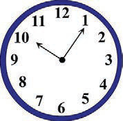

Expressing completed past events
Reading practice
Study the following faces of clocks and the actions performed. Then, read the sentence written below.

10:05 am
James ate breakfast.
12:10 pm
His father came home.
James had eaten breakfast before his father came home
Questions
1.
What did James do at 10:05 am?
2.
What did his father do at 12:10 pm?
3.
What had James done before his father came home?